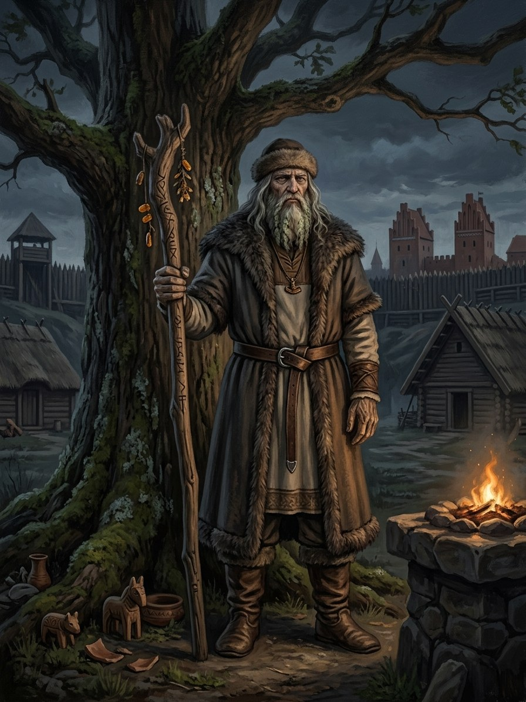

Dievas (Senelis)¶
Ryšiai
Took part in: Goštautas gives the warm coin to a beggar — The beggar on the threshold (implied; never named in the text). · The Beggar turns Kęstutis’s coin to stone
Domain Sky, order, the distant father
Layer God (Layer I) · the Crown of the World Tree, Dangus and the Glass Mountain
Force-face None. Walks the Middle World as the Beggar
Offerings None recorded or invented. Only custom: bread, coin or a story for the stranger at the door
Taboos Turning the stranger away: not punished, but left blind to your own road
Signs An old beggar in grey rags in a whirl of wind that stirs no other leaf; a coin that opens into a grey pebble; faint blue light in his footprints in snow
The small request. He asks bread, a coin or a story. Those who give are not rescued but seen: their path becomes clear to them, even when it leads to death.
Kęstutis. He threw the beggar a silver coin (Book I ch. 4) and walked to Krėva knowing.
Names. He may call Vytautas Vyti, a god's licence.
Bargains. He never bargains and cannot be asked.
Rescue. He does not act. He only sees.
Clarity. To be seen is to know your road. The price is that you cannot unknow it.
Coins to stone. What is paid for truth is worth nothing as money.
Dievas (Senelis)

Dievas (Senelis) · god¶
Tipas |
dievybė |
Pastaba |
The Sky Elder (Senelis); primordial remote supreme god of Baltic cosmology. |
Tautosakos šaltiniai [Istoriniai duomenys]¶
Dievas (Latvian Dievs) is the common Baltic name of the sky god, from Proto-Indo-European *deiwos, „the shining one“; in Lithuanian it is also the ordinary word for God. Almost everything written about him comes from Christian-era texts (Mažvydas, 1547, already uses it for the Christian God), so the pre-Christian figure is hard to isolate. Beresnevičius called him a deus otiosus, a remote god whose cult is doubtful, while others (Gimbutas) stress the sky-father of folklore. His name was often avoided in favour of epithets (Aukščiausiasis, Visagalis, Praamžius; Łasicki’s Auxtheias Vissagistis).
Dievas Senelis („Old Man God“) is folk-tale material, recorded in the 19th and 20th centuries: God walks the earth as an old man or beggar, tests households‘ hospitality and teaches chores. Folk tellers already blend him with the Christian God.
Sagoje¶
Domain: sky, order, the distant father. Element: none. Force-face: none. He never bargains and cannot be asked (Cosmology §3.1). Instead he walks as the Beggar (§5) and tests with small requests. Those who give are not rescued but seen: their road becomes clear to them, even if it leads to death. Those who refuse are not punished, only left blind to their own road.
In Book I ch. 4 an old beggar in grey rags sits at the roadside in a whirl of wind that stirs no other leaf. Kęstutis throws him a silver coin, and the beggar opens his palm on a grey pebble (the coin): what is paid for truth is worth nothing as money. Kęstutis then walks to Krėva knowing. The beggar calls Vytautas „Vyti“ (a god may use the intimate name). The beggar calls Vytautas „Vyti“. A beggar at Goštautas’s door in Book V ch. 17 may be the same figure. Weakness: none that matters; he does not act. He only sees.
Aukos ir draudimai¶
No cult is recorded or invented. The only observance is custom: give bread, coin or a story to the stranger at the door, since in the tales the beggar may be God.
Tarimas¶
DYEH-vahs (IPA [ˈdʲiɛvɐs]). The ie is one gliding vowel, never two syllables. DYEH-vahs seh-NEH-lis for Dievas Senelis.
Chronologija¶
Year |
Event |
Book |
|---|---|---|
1382 |
I · Vilko Tremtis |
|
1437 |
V · Vilko Palikimas |
Sąsajos¶
graph LR
dievas["Dievas (Senelis)"]
ev_beggar_coin["The Beggar turns Kęstutis's coin to stone"]
ev_gostautas_coin["Goštautas gives the warm coin to a beggar"]
dievas -->|Took part in| ev_beggar_coin
dievas -->|Took part in| ev_gostautas_coin
style dievas stroke-width:3px